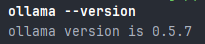
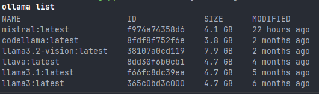
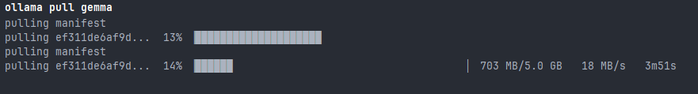
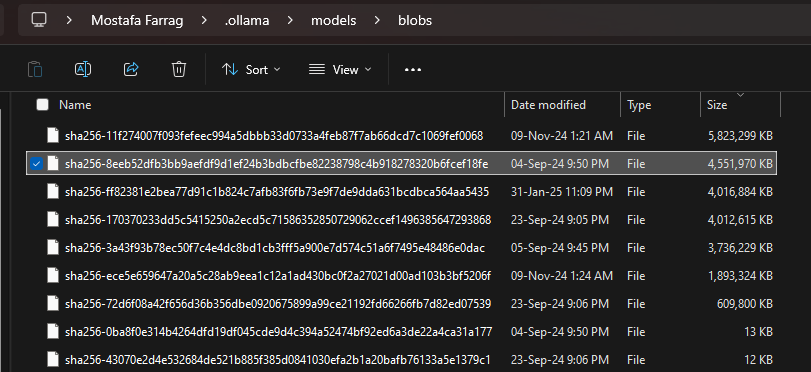
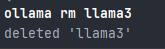
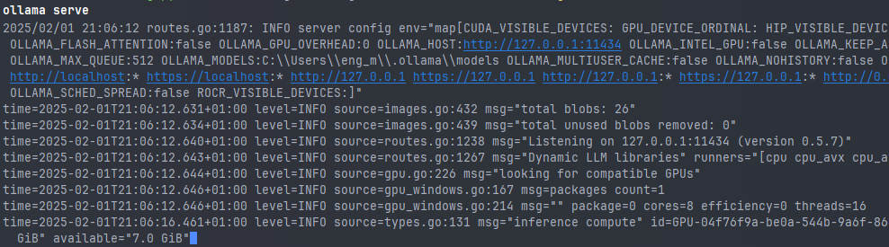
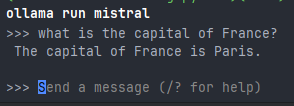

Running a Local LLM using Ollama
- Ollama is a tool for running large language models (LLMs) locally on your machine. It allows you to download, run, and interact with various LLMs without relying on cloud-based APIs.
- Ollama is designed for privacy, performance, and ease of use, making it ideal for offline inference.
Key Features of Ollama - Local Execution – Runs directly on your computer without requiring an internet connection. - Supports Multiple Models – Includes Mistral, LLaMA 2, Gemma, and more. - GPU Acceleration – Uses CUDA (NVIDIA) or Metal (Mac) for faster performance. - API Interface – Exposes a simple HTTP API for easy integration with applications. - CLI-Based Interaction – Allows running inference from the command line.
1. Installation of Ollama
Windows
- Download the Installer Visit Ollama's website and download the Windows installer.
-
Run the Installer
-
Double-click the downloaded
.exefile. - Follow the installation prompts.
- Restart your terminal after installation.
- Verify Installation Open PowerShell or Command Prompt and run:
ollama --version
This should return the installed version.

macOS
- Install via Homebrew
brew install ollama
ollama --version
Linux
- Install via Curl
curl -fsSL https://ollama.com/install.sh | sh
ollama --version
2. Downloading and Managing Models
List Available Models
ollama list

Download a Model
First, you can check the available models at https://ollama.com/library and run the following command to download a model:
ollama pull mistral
ollama pull gemma
ollama pull llama2

- When a model is downloaded using Ollama, it is stored in the
~/.ollama/models/directory. The model files are located in a subdirectory calledblobs. The model's manifest is available in the~/.ollama/models/manifests/registry.ollama.ai/library/<model>/latestfile.

Remove a Model
ollama rm llama3

3. Running Ollama Locally
Start the Ollama Server
Run:
ollama serve
Windows PowerShell
Copyright (C) Microsoft Corporation. All rights reserved.
Install the latest PowerShell for new features and improvements! https://aka.ms/PSWindows
Loading personal and system profiles took 2774ms.
(llama-utils-l7lRCPhg-py3.12)(base) C:\gdrive\algorithms\AI\llms\llama-utils git:[dev/tools-documentations]
ollama serve
2025/02/01 20:05:46 routes.go:1187: INFO server config env="map[CUDA_VISIBLE_DEVICES: GPU_DEVICE_ORDINAL: HIP_VISIBLE_DEVICES: HSA_OVERRIDE_GFX_VERSION: HTTPS_PROXY: HTTP_PROXY: NO_PROXY: OLLAMA_DEBUG:false OLLAMA_FLASH_ATTENTION:false OLLAMA_GPU_OVERHEAD:0 OLLAMA_HOST:http://127.0.0.1:11434 OLLAMA_INTEL_GPU:false OLLAMA_KEEP_ALIVE:5m0s OLLAMA_KV_CACHE_TYPE: OLLAMA_LLM_LIBRARY: OLLAMA_LOAD_TIMEOUT:5m0s OLLAMA_MAX_LOADED_MODELS:0 OLLAMA_MAX_QUEUE:512 OLLAMA_MODELS:C:\\Users\\eng_m\\.ollama\\models OLLAMA_MULTIUSER_CACHE:false OLLAMA_NOHISTORY:false OLLAMA_NOPRUNE:false OLLAMA_NUM_PARALLEL:0 OLLAMA_ORIGINS:[http://localhost https://localhost http://localhost:* https://localhost:* http://127.0.0.1 https://127.0.0.1 http://127.0.0.1:* https://127.0.0.1:* http://0.0.0.0 https://0.0.0.0 http://0.0.0.0:* https://0.0.0.0:* app://* file://* tauri://* vscode-webview://*] OLLAMA_SCHED_SPREAD:false ROCR_VISIBLE_DEVICES:]"
time=2025-02-01T20:05:46.724+01:00 level=INFO source=images.go:432 msg="total blobs: 31"
time=2025-02-01T20:05:46.726+01:00 level=INFO source=images.go:439 msg="total unused blobs removed: 0"
time=2025-02-01T20:05:46.728+01:00 level=INFO source=routes.go:1238 msg="Listening on 127.0.0.1:11434 (version 0.5.7)"
time=2025-02-01T20:05:46.729+01:00 level=INFO source=routes.go:1267 msg="Dynamic LLM libraries" runners="[cuda_v12_avx rocm_avx cpu cpu_avx cpu_avx2 cuda_v11_avx]"
time=2025-02-01T20:05:46.729+01:00 level=INFO source=gpu.go:226 msg="looking for compatible GPUs"
time=2025-02-01T20:05:46.729+01:00 level=INFO source=gpu_windows.go:167 msg=packages count=1
time=2025-02-01T20:05:46.729+01:00 level=INFO source=gpu_windows.go:214 msg="" package=0 cores=8 efficiency=0 threads=16
time=2025-02-01T20:05:46.956+01:00 level=INFO source=gpu.go:334 msg="detected OS VRAM overhead" id=GPU-04f76f9a-be0a-544b-9a6f-8607b8d0a9ab library=cuda compute=8.6 driver=12.6 name="NVIDIA GeForce RTX 3060 Ti" overhead="283.2 MiB"
time=2025-02-01T20:05:46.959+01:00 level=INFO source=types.go:131 msg="inference compute" id=GPU-04f76f9a-be0a-544b-9a6f-8607b8d0a9ab library=cuda variant=v12 compute=8.6 driver=12.6 name="NVIDIA GeForce RTX 3060 Ti"

Check if the server is running:
ps aux | grep ollama
for Windows use:
tasklist | findstr /i "ollama"
you will get something similar to the following
tasklist | findstr /i "ollama"
ollama.exe 18460 Console 1 48,644 K
Configure GPU Acceleration
If your system supports CUDA, Ollama will use the GPU automatically. You can check GPU usage via:
nvidia-smi
To force CPU usage:
OLLAMA_USE_CPU=1 ollama run mistral
set OLLAMA_USE_CPU=1
ollama run mistral
Troubleshooting
- If
ollamacommands are not found, restart your shell or check your$PATH:echo $PATH - For permission issues, try running:
sudo ollama serve
4. Interacting with Ollama via CLI
Basic Inference
ollama run mistral

to exit type
/bye
you can also run the following command to get the response from the model directly
ollama run mistral "What is the capital of France?"
The above command will return the following response
Paris is the capital of France.
5. Using Ollama as an API
Starting the API
Run:
ollama serve
1.Making a Request via curl
curl http://localhost:11434/api/generate -d '{
"model": "mistral",
"prompt": "Tell me a joke"
}'
curl -X POST "http://127.0.0.1:11434/api/generate" -H "Content-Type: application/json" -d "{\"model\": \"mistral\", \"prompt\": \"Tell me a short fact about AI\", \"options\": {\"max_tokens\": 50}}"
The response will be similar to:
C:\Users\my-user-name>curl -X POST "http://127.0.0.1:11434/api/generate" -H "Content-Type: application/json" -d "
{\"model\": \"mistral\", \"prompt\": \"Tell me a short fact about AI\", \"options\": {\"max_tokens\": 50}}"
{"model":"mistral","created_at":"2025-02-01T21:01:25.9015572Z","response":" Art","done":false}
{"model":"mistral","created_at":"2025-02-01T21:01:25.9428293Z","response":"ificial","done":false}
{"model":"mistral","created_at":"2025-02-01T21:01:25.9610394Z","response":" Intelligence","done":false}
{"model":"mistral","created_at":"2025-02-01T21:01:25.9747797Z","response":" (","done":false}
{"model":"mistral","created_at":"2025-02-01T21:01:25.9880321Z","response":"AI","done":false}
{"model":"mistral","created_at":"2025-02-01T21:01:26.0026846Z","response":")","done":false}
{"model":"mistral","created_at":"2025-02-01T21:01:26.017711Z","response":" has","done":false}
{"model":"mistral","created_at":"2025-02-01T21:01:26.0311171Z","response":" the","done":false}
{"model":"mistral","created_at":"2025-02-01T21:01:26.0447043Z","response":" capability","done":false}
{"model":"mistral","created_at":"2025-02-01T21:01:26.0593169Z","response":" to","done":false}
{"model":"mistral","created_at":"2025-02-01T21:01:26.0724141Z","response":" learn","done":false}
{"model":"mistral","created_at":"2025-02-01T21:01:26.0859434Z","response":" from","done":false}
{"model":"mistral","created_at":"2025-02-01T21:01:26.1004478Z","response":" its","done":false}
{"model":"mistral","created_at":"2025-02-01T21:01:26.1138166Z","response":" experiences","done":false}
{"model":"mistral","created_at":"2025-02-01T21:01:26.1279841Z","response":",","done":false}
{"model":"mistral","created_at":"2025-02-01T21:01:26.1404762Z","response":" adjust","done":false}
{"model":"mistral","created_at":"2025-02-01T21:01:26.1544505Z","response":" its","done":false}
{"model":"mistral","created_at":"2025-02-01T21:01:26.1684524Z","response":" behavior","done":false}
{"model":"mistral","created_at":"2025-02-01T21:01:26.1826811Z","response":",","done":false}
{"model":"mistral","created_at":"2025-02-01T21:01:26.1958623Z","response":" and","done":false}
{"model":"mistral","created_at":"2025-02-01T21:01:26.2081325Z","response":" improve","done":false}
{"model":"mistral","created_at":"2025-02-01T21:01:26.2259143Z","response":" its","done":false}
{"model":"mistral","created_at":"2025-02-01T21:01:26.2384732Z","response":" performance","done":false}
{"model":"mistral","created_at":"2025-02-01T21:01:26.25283Z","response":" based","done":false}
{"model":"mistral","created_at":"2025-02-01T21:01:26.2662188Z","response":" on","done":false}
{"model":"mistral","created_at":"2025-02-01T21:01:26.2807515Z","response":" that","done":false}
{"model":"mistral","created_at":"2025-02-01T21:01:26.2942798Z","response":" learning","done":false}
{"model":"mistral","created_at":"2025-02-01T21:01:26.3073516Z","response":".","done":false}
{"model":"mistral","created_at":"2025-02-01T21:01:26.3217636Z","response":" This","done":false}
{"model":"mistral","created_at":"2025-02-01T21:01:26.3351073Z","response":" is","done":false}
{"model":"mistral","created_at":"2025-02-01T21:01:26.349646Z","response":" known","done":false}
{"model":"mistral","created_at":"2025-02-01T21:01:26.3629003Z","response":" as","done":false}
{"model":"mistral","created_at":"2025-02-01T21:01:26.3757784Z","response":" machine","done":false}
{"model":"mistral","created_at":"2025-02-01T21:01:26.3892467Z","response":" learning","done":false}
{"model":"mistral","created_at":"2025-02-01T21:01:26.4030308Z","response":",","done":false}
{"model":"mistral","created_at":"2025-02-01T21:01:26.4183595Z","response":" one","done":false}
{"model":"mistral","created_at":"2025-02-01T21:01:26.4317698Z","response":" of","done":false}
{"model":"mistral","created_at":"2025-02-01T21:01:26.4465969Z","response":" the","done":false}
{"model":"mistral","created_at":"2025-02-01T21:01:26.4595035Z","response":" sub","done":false}
{"model":"mistral","created_at":"2025-02-01T21:01:26.473006Z","response":"fields","done":false}
{"model":"mistral","created_at":"2025-02-01T21:01:26.4876476Z","response":" of","done":false}
{"model":"mistral","created_at":"2025-02-01T21:01:26.5008632Z","response":" AI","done":false}
{"model":"mistral","created_at":"2025-02-01T21:01:26.5142572Z","response":".","done":false}
{"model":"mistral","created_at":"2025-02-01T21:01:26.5306917Z","response":"","done":true,"done_reason":"stop","context":[3,29473,16027,1296,1032,3253,2407,1452,16875,4,1027,4719,15541,23859,1093,12509,29499,1427,1040,22136,1066,3590,1245,1639,9789,29493,8160,1639,6942,29493,1072,5684,1639,5165,3586,1124,1137,5936,29491,1619,1117,3419,1158,6367,5936,29493,1392,1070,1040,1851,8202,1070,16875,29491],"total_duration":4969300700,"load_duration":3858876600,"prompt_eval_count":12,"prompt_eval_duration":470000000,"eval_count":44,"eval_duration":630000000}
Options
model: The LLM model to use (e.g.,mistral,gemma,llama2).prompt: The input text or query for the model.options: Additional parameters likemax_tokens,temperature, etc.max_tokens: The maximum number of tokens to generate in the response.stream: Whether to stream the response (default:false). Iftrue, the response will be streamed in chunks.temperature: Controls the randomness of the output (default:0.7).top_p: Filters the tokens to consider based on their cumulative probability (default:0.9).top_k: Filters the tokens to consider based on their likelihood (default:50).stop: A list of tokens at which the model should stop generating text.n: The number of completions to generate (default:1).return_full: Whether to return the full response context (default:false).return_prompt: Whether to return the prompt in the response (default:false).return_options: Whether to return the options in the response (default:false).return_context: Whether to return the context in the response (default:false).return_duration: Whether to return the duration in the response (default:false).return_eval_count: Whether to return the evaluation count in the response (default:false).return_eval_duration: Whether to return the evaluation duration in the response (default:false).return_total_duration: Whether to return the total duration in the response (default:false).return_load_duration: Whether to return the load duration in the response (default:false).return_done: Whether to return the done status in the response (default:false).return_done_reason: Whether to return the done reason in the response (default:false).return_error: Whether to return the error in the response (default:false).return_error_message: Whether to return the error message in the response (default:false).-
return_error_traceback: Whether to return the error traceback in the response (default:false).
2.Using Python (requests)
import requests
url = "http://localhost:11434/api/generate"
data = {"model": "mistral", "prompt": "Tell me a joke"}
response = requests.post(url, json=data)
print(response.json())
6. Integrating Ollama with llama-index
Install Dependencies
pip install llama-index-llms-ollama
Configuring llama-index
from llama_index.llms.ollama import Ollama
from llama_index.core import Settings
llm = Ollama(model="mistral")
Settings.llm = llm
Querying Ollama via llama-index
response = llm.complete("What is the capital of the Netherlands?")
print(response)
The capital city of the Netherlands is Amsterdam. However, it's important to note that The Hague (Den Haag) serves as the seat of government, hosting several key institutions such as the Dutch Parliament and the Supreme Court. Amsterdam, on the other hand, is known for its vibrant culture and economic significance.
7. Performance Optimization
1.GPU Acceleration
- Ensure you have CUDA installed:
nvidia-smi - Run Ollama with GPU support:
for Windows use:
OLLAMA_USE_CUDA=1 ollama serveset OLLAMA_USE_CUDA=1 ollama serve
2.Change port number
- To change the port number, use the
OLLAMA_HOSTenvironment variable to specify the new port:for Windows use:export OLLAMA_HOST=127.0.0.1:8081 ollama servethe previous command will change the port toset OLLAMA_HOST=127.0.0.1:8081 ollama serve8081from the default port11434. the output will be similar to the followingC:\Users\eng_m>set OLLAMA_HOST=http://127.0.0.1:8081 C:\Users\eng_m>ollama serve 2025/02/01 22:34:25 routes.go:1187: INFO server config env="map[CUDA_VISIBLE_DEVICES: GPU_DEVICE_ORDINAL: HIP_VISIBLE_DEVICES: HSA_OVERRIDE_GFX_VERSION: HTTPS_PROXY: HTTP_PROXY: NO_PROXY: OLLAMA_DEBUG:false OLLAMA_FLASH_ATTENTION:false OLLAMA_GPU_OVERHEAD:0 OLLAMA_HOST:http://127.0.0.1:8081 OLLAMA_INTEL_GPU:false OLLAMA_KEEP_ALIVE:5m0s OLLAMA_KV_CACHE_TYPE: OLLAMA_LLM_LIBRARY: OLLAMA_LOAD_TIMEOUT:5m0s OLLAMA_MAX_LOADED_MODELS:0 OLLAMA_MAX_QUEUE:512 OLLAMA_MODELS:C:\\Users\\eng_m\\.ollama\\models OLLAMA_MULTIUSER_CACHE:false OLLAMA_NOHISTORY:false OLLAMA_NOPRUNE:false OLLAMA_NUM_PARALLEL:0 OLLAMA_ORIGINS:[http://localhost https://localhost http://localhost:* https://localhost:* http://127.0.0.1 https://127.0.0.1 http://127.0.0.1:* https://127.0.0.1:* http://0.0.0.0 https://0.0.0.0 http://0.0.0.0:* https://0.0.0.0:* app://* file://* tauri://* vscode-webview://*] OLLAMA_SCHED_SPREAD:false ROCR_VISIBLE_DEVICES:]" time=2025-02-01T22:34:25.996+01:00 level=INFO source=images.go:432 msg="total blobs: 26" time=2025-02-01T22:34:25.998+01:00 level=INFO source=images.go:439 msg="total unused blobs removed: 0" time=2025-02-01T22:34:26.000+01:00 level=INFO source=routes.go:1238 msg="Listening on 127.0.0.1:8081 (version 0.5.7)" time=2025-02-01T22:34:26.001+01:00 level=INFO source=routes.go:1267 msg="Dynamic LLM libraries" runners="[cpu cpu_avx cpu_avx2 cuda_v11_avx cuda_v12_avx rocm_avx]" time=2025-02-01T22:34:26.001+01:00 level=INFO source=gpu.go:226 msg="looking for compatible GPUs" time=2025-02-01T22:34:26.002+01:00 level=INFO source=gpu_windows.go:167 msg=packages count=1 time=2025-02-01T22:34:26.002+01:00 level=INFO source=gpu_windows.go:214 msg="" package=0 cores=8 efficiency=0 threads=16 time=2025-02-01T22:34:26.188+01:00 level=INFO source=types.go:131 msg="inference compute" id=GPU-04f76f9a-be0a-544b-9a6f-8607b8d0a9ab library=cuda variant=v12 compute=8.6 driver=12.6 name="NVIDIA GeForce RTX 3060 Ti" total="8.0 GiB" available="7.0 GiB"
2.Change cache directory
Change default .ollama directory (Symlink)
-
To change the cache directory from Windows directory to a directory that exist in a network, you can symlink the
~/. ollamadirectory to a different location. -
First move the
.ollamadirectory to the new location:Move-Item "$env:USERPROFILE\.ollama" "<your-new-directory>" -Force -
Second, create a symlink to the new location:
PowerShell will complain if the old director in your user profile exists, so make sure you move it to the new directory as shown above.New-Item -ItemType SymbolicLink -Path "$env:USERPROFILE\.ollama" -Target "<your-new-directory>" -
Restart Ollama to apply the changes.
- to verify the changes, you can run the
serveor thelistcommand from ollama.ollama serve
8. Common Issues & Troubleshooting
| Issue | Solution |
|---|---|
| Command not found | Restart the terminal, check$PATH. |
| GPU not used | Checknvidia-smi, install CUDA drivers. |
| API not responding | Ensureollama serve is running. |
This guide provides everything needed to run Ollama locally and integrate it with llama-index. Let me know if you need further customization! 🚀
9.Errors
1.address not permitted
You might face the following error when you run the ollama serve command
Error: listen tcp 127.0.0.1:11434: bind: Only one usage of each socket address (protocol/network address/port) is normally permitted.
11434 is already in use, to solve this error, you can check which process is using this port by running the following command
netstat -ano | findstr :11434
netstat -ano | grep :11434
You will get the following output
TCP 127.0.0.1:11434 0.0.0.0:0 LISTENING 20796
taskkill /F /PID 20796
kill -9 20796
Then you will gee the following output
SUCCESS: The process with PID 20796 has been terminated.
- Then you can run the
ollama servecommand again, you should see the following output2024/11/22 23:20:04 routes.go:1189: INFO server config env="map[CUDA_VISIBLE_DEVICES: GPU_DEVICE_ORDINAL: HIP_VISIBLE_DEVICES: HSA_OVERRIDE_GFX_VERSION: HTTPS_PROXY: HTTP_PROXY: NO_PROXY: OLLAMA_DEBUG:false OLLAMA_FLASH_ATTENTION:false OLLAMA_GPU_OVERHEAD:0 OLLAMA_HOST:http://127.0.0.1:11434 OLLAMA_INTEL_GPU:false OLLAMA_KEEP_ALIVE:5m0s OLLAMA_LLM_LIBRARY: OLLAMA_LOAD_TIMEOUT:5m0s OLLAMA_MAX_LOADED_MODELS:0 OLLAMA_MAX_QUEUE:512 OLLAMA_MODELS:C:\\Users\\eng_m\\.ollama\\models OLLAMA_MULTIUSER_CACHE:false OLLAMA_NOHISTORY:false OLLAMA_NOPRUNE:false OLLAMA_NUM_PARALLEL:0 OLLAMA_ORIGINS:[http://localhost https://localhost http://localhost:* https://localhost:* http://127.0.0.1 https://127.0.0.1 http://127.0.0.1:* https://127.0.0.1:* http://0.0.0.0 https://0.0.0.0 http://0.0.0.0:* https://0.0.0.0:* app://* file://* tauri://* vscode-webview://*] OLLAMA_SCHED_SPREAD:false OLLAMA_TMPDIR: ROCR_VISIBLE_DEVICES:]" time=2024-11-22T23:20:04.393+01:00 level=INFO source=images.go:755 msg="total blobs: 28" time=2024-11-22T23:20:04.395+01:00 level=INFO source=images.go:762 msg="total unused blobs removed: 0" time=2024-11-22T23:20:04.397+01:00 level=INFO source=routes.go:1240 msg="Listening on 127.0.0.1:11434 (version 0.4.1)" time=2024-11-22T23:20:04.400+01:00 level=INFO source=common.go:49 msg="Dynamic LLM libraries" runners="[cpu cpu_avx cpu_avx2 cuda_v11 cuda_v12 rocm]" time=2024-11-22T23:20:04.400+01:00 level=INFO source=gpu.go:221 msg="looking for compatible GPUs" time=2024-11-22T23:20:04.400+01:00 level=INFO source=gpu_windows.go:167 msg=packages count=1 time=2024-11-22T23:20:04.400+01:00 level=INFO source=gpu_windows.go:214 msg="" package=0 cores=8 efficiency=0 threads=16 time=2024-11-22T23:20:04.592+01:00 level=INFO source=types.go:123 msg="inference compute" id=GPU-04f76f9a-be0a-544b-9a6f-8607b8d0a9ab library=cuda variant=v12 compute=8.6 driver=12.6 name="NVIDIA GeForce RTX 3060 Ti" total="8.0 GiB" available="7.0 GiB"